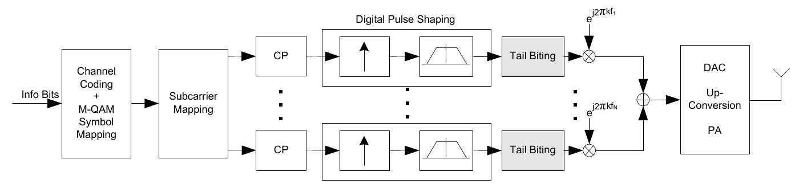

# 传统的 OFDM 调制
目前在数字通信领域使用最为广泛的一种多载波调制方式是正交频分复用 (OFDM)，OFDM 使用了大量正交的子载波，可以在高速传输数据的同时有效抵抗干扰与失真。
对于需要传输的复信号码元，基带上的 OFDM 信号可以表示为：
其中， 为码元持续时间，， 为载波带宽。
为了满足正交条件，。在这种情况下，有：
而对于信号 进行冲激采样得到，这个采样序列 是序列 的离散傅立叶逆变换。这给了我们通过 FFT 来快速、简单地实现 OFDM 调制的方法。
IDFT
一个时间信号 的抽样函数为，其中，则 的离散傅立叶变换 (DFT) 为：
的离散傅立叶逆变换 (IDFT) 为：
注意观察我们发现上面 OFDM 调制的式子 形式满足这里的式。
而为了解决无线信道的多径时延问题，OFDM 采用了添加循环前缀 CP 的方案（实际上是增加了一个保护间隔），CP 的长度大于多径时延，便可以避免其引发的码间串扰。
在接收端，解调器输出的信号为
其中 是无线信道在 处的频率响应， 为加性噪声。这样信道引发的失真是信道频率响应的乘积，因此 OFDM 信号的检测也比较简单。
然而，根据式，OFDM 调制的信号是一个时间有限的信号，那么它的带外泄漏 (OOB leakage) 会是非常大的，这需要增加保护频带来避免其他的信号被干扰。
此外，OFDM 的峰均比 PAPR 也较高，容易产生非线性失真。
# 在 OFDM 的基础上改进
为了解决 OFDM 的问题，满足 5G 网络通信的要求，许多新的方案也被提出。
一类方案是基于脉冲整形来降低 OOB（但是信号不再是正交的），代表性的方法有滤波器组多载波 (FBMC) 和这次做的广义频分复用 (GFDM)，此外还有脉冲整形 OFDM，QAM-FBMC 等。
另一类是基于子频带滤波的方案，包括了通用滤波多载波 (UFMC)，子带滤波 OFDM (f-OFDM) 等。
除去这些方法，还有一些其他的思路，例如 GI DFT-s-OFDM，SP-OFDM，OTFS 等。
# GFDM
广义频分复用 (Generalized Frequency Division Multiplexing) 最早在 [2] 这篇论文中提出，相较于 OFDM，GFDM 的 OOB 泄漏更低，PAPR 更低，同时可以灵活利用空闲频带资源，和 MIMO 系统的兼容性也更好。
# 实现 - I

对于输入的码字， 为载波的编号，而 为符号的编号。经过一个上采样之后，得到时间间隔 的符号。接下来会根据数字脉冲整形的滤波器长度来添加 CP，对每个载波，计算：
这一步可以有效降低 OOB 泄漏。而 GFDM 使用了一种 tail biting 的方式来减少 CP 的长度，这个后面会来看它的实现。
针对各个子载波进行脉冲整形之后，将每个子载波移动到其对应的载波频率 上，得到时域上的 GFDM 信号：
接下来完成 D-A 转换等操作，就可以得到 GFDM 信号。
在经过信道之后，得到接收端的信号：
其中 为信道响应， 为噪声。信噪比 定义为
接收端对接收到的信号每个子载波分别进行解调：
在完成解调后，对数据进行下采样等操作得到接收到的码字。
# 实现 - II
参考文献 [3] 给出了一个比较详细的实现方案 [4]。我发射机的实现也是依赖于这里给出的方案 [4] 的实现，所以说后面的符号也是用这里的。
对于使用了 个时隙和 个子载波的多载波系统，一次最多发送 个码字。定义一个矩阵，其上面的元素 代表第 个时隙的第 个子载波的符号。
而有时候，部分的载波并不会被使用，也就是，这种情况下，未使用的载波对应的矩阵 的这一列值均为 0。
Resource Mapper 所要做的就是把串行输入的 个符号映射到可以使用的这些子载波中，得到矩阵。
我们把矩阵 的每个列向量转写成，转成下面的形式（这一步相当于 np.flatten ）：
这样就得到了一个 GFDM 帧。
GFDM 调制就是对 GFDM 帧进行一个矩阵乘法：
这里的调制矩阵 可以表示为下面的形式：
其中的元素都是从一个原型滤波器 派生的滤波器，这个原型滤波器可以是 RRC 或者 Gaussian 滤波器等。
派生出的滤波器中的第 个元素可以写成下面的形式：
注意这里的频率位置在，与前面原始的实现有所不同。
这里的一个大问题是，这个调制矩阵 是一个非常大的矩阵，计算矩阵乘法是一个巨大的性能开销。一个优化的方法就是将其转换到频域上进行操作。
将式 利用频域上的运算重写：
是载波 上的符号向量，首先我们对其进行一个 点的离散傅立叶变换，得到频域上的符号信号。接下来，我们将这个信号乘以上采样矩阵 得到长度 的序列，这里的 是一个重叠系数，这一步具体的效果我们后面代码实现的部分说。接下来矩阵 是一个对角矩阵，其对角线是这个子载波使用的滤波器相应，这一步相当于进行了脉冲整形。然后，通过乘以矩阵，我们将这个频域上的信号映射到长度为 的频域信号中子载波 所在的位置上。最后，进行一个离散傅立叶逆变换，我们将频域信号转换回时域。
下面来看一下具体的代码实现。
# Resource Mapper
实现 II 给出了 C++ 的基于 GNURadio 的实现，我这边是稍微改动了一下他们的代码，把其中一部分依赖 Python 的实现用 C++ 重写了一遍。
Resource Mapper 实现的是将符号分配到各个子载波的各个时隙上，那么首先需要一个子载波的映射表 subcarrier_map ，告诉我们哪些子载波可用。
std::vector<int> get_symbol_map(int active_sc, int sc, bool dc_free) { | |
//active_sc 使用的子载波（K_{on}) | |
//sc 子载波总数 | |
std::vector<int> sc_map; | |
int offset = dc_free ? 1 : 0; | |
for (int i = offset; i < active_sc / 2 + offset; i++) sc_map.push_back(i); | |
for (int i = sc - active_sc / 2; i < sc; i++) sc_map.push_back(i); | |
return sc_map; | |
} |
这是按照原始的 Python 实现进行的重写，这里会优先选择编号在两侧的子载波：
举个例子，如果有 8 个子载波，使用其中的 2 个，那么在 dc_free 为 false 的情况下，会优先使用载波 0 和 7，如果 dc_free 为 true，那么会优先使用载波 1 和 7。
如果用 4 个子载波， dc_free 为 false 那么会优先使用载波 0、1、6、7，以此类推。
我这里自己写了一个根据频率位置来生成子载波映射的函数：
std::vector<int> get_symbol_map_by_freq_map(std::vector<double> freq_map, | |
int sc, | |
double bandwidth) { | |
if (freq_map.size() > sc) { | |
throw std::invalid_argument("freq_map size is larger than sc"); | |
} | |
if (std::abs(*std::min_element(freq_map.begin(), freq_map.end())) | |
> bandwidth / 2) { | |
throw std::invalid_argument("freq_map is out of range"); | |
} | |
if (std::abs(*std::max_element(freq_map.begin(), freq_map.end())) | |
> bandwidth / 2) { | |
throw std::invalid_argument("freq_map is out of range"); | |
} | |
// so we try to spilt the freq map, and map the subcarriers according to the freq map. | |
std::vector<int> sc_map; | |
double freq_step = bandwidth / sc; | |
// the subcarrier still need same intervals... | |
std::sort(freq_map.begin(), freq_map.end()); | |
for (auto f : freq_map) { | |
int fidx = (int)((f + bandwidth / 2) / freq_step); | |
int sc_idx = (fidx + sc / 2 + sc % 2) % sc; | |
sc_map.push_back(sc_idx); | |
} | |
return sc_map; | |
} |
参数 freq_map 是相对于中心频率的偏移，单位是 Hz， sc 是子载波总数， bandwidth 是带宽，单位是 Hz。
就是为什么是这样子排列呢……fftw 的实现是这样子的，输进去一堆数据，前一半是零频率和正频率部分，后一半是负频率部分，所以这里也是这样子。
接下来我们要做的也就是按照生成的映射表把输入的符号放在各个子载波上，有两种方式，分别是 per timeslot 和 per subcarrier 。
// _sc_map = sc_map.size() == 0 ? get_symbol_map(active_sc, sc, true) : sc_map; | |
void resource_mapper_cc_impl::_map_per_ts(std::complex<float>* out, | |
const std::complex<float>* in, | |
const size_t ninput_size) { | |
size_t sym_ctr = 0; | |
size_t iidx = 0; | |
for (int tidx = 0; tidx < _ts; tidx++) { | |
for (auto scidx : _sc_map) { | |
int oidx = _ts * scidx + tidx; | |
out[oidx] = | |
sym_ctr < ninput_size ? in[iidx++] : gr_complex(0.0, 0.0); | |
sym_ctr++; | |
} | |
} | |
} | |
void resource_mapper_cc_impl::_map_per_sc(std::complex<float>* out, | |
const std::complex<float>* in, | |
const size_t ninput_size) { | |
size_t sym_ctr = 0; | |
size_t iidx = 0; | |
for (auto scidx : _sc_map) { | |
for (int tidx = 0; tidx < _ts; tidx++) { | |
int oidx = _ts * scidx + tidx; | |
out[oidx] = | |
sym_ctr < ninput_size ? in[iidx++] : gr_complex(0.0, 0.0); | |
sym_ctr++; | |
} | |
} | |
} |
这里做了什么事情？我们以逐时隙映射 per timeslot 来说。
我们现在有了 个时隙，有 个子载波，其中有 个子载波是被使用的。现在有 个码元，它们按照顺序先排列在 个子载波的第一个时隙上，接下来排列在第二个时隙上，以此类推。
如果我们有四个子载波，使用其中的三个，那么就是按照这样的顺序来：
|<---length=ts--->|
|<--subcarrier0-->|<--subcarrier1-->|<--subcarrier2-->|<--subcarrier3-->|
+-----------------+-----------------+-----------------+-----------------+
|# # | |# # |# # |
+-----------------+-----------------+-----------------+-----------------+
^s1 ^s4 ^ not active ^s2 ^s5 ^s3 ^s6
我们也可以把这种映射理解成码元按照行的顺序排列在 中。
完成了这个映射之后，我们实际上就是得到了 个长度为 的向量，将它们连接起来便也就得到了前面提到的向量。
# GFDM Modulation
我们上一步已经得到了一个向量，接下来，我们要按照式 的方式对其进行调制。
先来看一下调制部分的代码：
void gfdm_modulator_cc_impl::_modulate(const gr_complex* in, gr_complex* out) { | |
auto part_len = std::min(_ts * _overlap / 2, _ts); | |
memset(_ifft_in.data(), 0, sizeof(gr_complex) * _ifft_len); | |
for (auto scidx = 0; scidx < _sc; scidx++) { | |
memcpy(_sub_fft_in.data(), in, sizeof(gr_complex) * _ts); | |
fftwf_execute(_sub_fft_plan); | |
for (auto lidx = 0; lidx < _overlap; lidx++) { | |
auto src_part_pos = ((lidx + _overlap / 2) % _overlap) * _ts; | |
auto dst_part_pos = | |
((scidx + lidx + _sc - (_overlap / 2)) % _sc) * _ts; | |
volk_32fc_x2_multiply_32fc(_filtered.data(), | |
_sub_fft_out.data(), | |
_filter_taps.data() + src_part_pos, | |
_ts); | |
volk_32f_x2_add_32f((float*)(_ifft_in.data() + dst_part_pos), | |
(float*)(_ifft_in.data() + dst_part_pos), | |
(float*)_filtered.data(), | |
2 * part_len); | |
} | |
in += _ts; | |
} | |
fftwf_execute(_ifft_plan); | |
volk_32fc_s32fc_multiply_32fc( | |
out, _ifft_out.data(), gr_complex(1.0 / _ifft_len, 0.0), _ifft_len); | |
} |
这部分代码非常的简短，我们来看看它做了什么。
前两行第一行计算了 part_len ，是 _ts 也就是时隙和 _ts*_overlap/2 中较小的一个，一般我们使用 overlap=2 的时候，二者是相等的。接下来第二行将 _ifft_in 这个长度为 _ifft_len 实际上也就是 的向量初始化。
接下来的循环，我们遍历各个子载波， scidx 表示 SubCarrier InDeX 。对于每一个子载波，我们进行了一个快速傅立叶变换，得到了频域上的子载波 _sub_fft_out ，这是好理解的。
下面的一个循环：
for (auto lidx = 0; lidx < _overlap; lidx++) { | |
auto src_part_pos = ((lidx + _overlap / 2) % _overlap) * _ts; | |
auto dst_part_pos = | |
((scidx + lidx + _sc - (_overlap / 2)) % _sc) * _ts; | |
volk_32fc_x2_multiply_32fc(_filtered.data(), | |
_sub_fft_out.data(), | |
_filter_taps.data() + src_part_pos, | |
_ts); | |
volk_32f_x2_add_32f((float*)(_ifft_in.data() + dst_part_pos), | |
(float*)(_ifft_in.data() + dst_part_pos), | |
(float*)_filtered.data(), | |
2 * part_len); | |
} |
这里 lidx 是 L idx 或者 overLap idx 。这里干了什么？
我们先来看一下 _filter_taps 是什么。
_filter_taps 由函数 get_freq_domain_filter 给出：
std::vector<gr_complex> get_freq_domain_filter( | |
int filter_type, float alpha, int timeslots, int subcarriers, int overlap) { | |
std::vector<float> impulse_resp; | |
switch (filter_type) { | |
case GFDM_RC_FILTER: | |
impulse_resp = | |
get_rc_impulse_resp(timeslots * subcarriers, alpha, subcarriers, 1); | |
break; | |
case GFDM_RRC_FILTER: | |
impulse_resp = get_rrc_impulse_resp( | |
timeslots * subcarriers, alpha, subcarriers, 1); | |
break; | |
default: throw std::invalid_argument("Invalid filter type"); | |
} | |
std::vector<gr_complex> freq_impulse_resp = get_freq_taps(impulse_resp); | |
std::vector<gr_complex> freq_filter = | |
get_freq_taps_sparse(freq_impulse_resp, timeslots, overlap); | |
auto energy = calc_signal_power(freq_filter, freq_filter.size()); | |
for (int idx = 0; idx < freq_filter.size(); idx++) { | |
freq_filter[idx] /= std::sqrt(energy / timeslots); | |
} | |
return freq_filter; | |
} |
这里考虑使用 RRC 滤波器的情况，函数 get_rrc_impulse_resp(const int samples, const float alpha, const float sym_time, const float freq) 会给出一个长度为 sample 的序列，这个序列是滚降系数 alpha 的 RRC 滤波器在符号持续时间 sym_time 秒，过采样 freq 倍的冲激响应。RRC 滤波器在频域上的冲激响应如下面的图：
接下来 get_freq_taps 将这个冲激响应转换为频域上的响应，不过这里注意一下这里的 rotate 操作：
std::vector<gr_complex> get_freq_taps(std::vector<float> impluse_resp) { | |
std::vector<gr_complex> fft_resp(impluse_resp.size()); | |
gr_complex* fft_in = new gr_complex[impluse_resp.size()]; | |
gr_complex* fft_out = new gr_complex[impluse_resp.size()]; | |
// h = np.roll(h, h.shape[-1] // 2) | |
std::rotate(impluse_resp.begin(), | |
impluse_resp.begin() + impluse_resp.size() / 2, | |
impluse_resp.end()); | |
for (int idx = 0; idx < impluse_resp.size(); idx++) { | |
fft_in[idx] = gr_complex(impluse_resp[idx], 0); | |
} | |
memset(fft_out, 0, impluse_resp.size() * sizeof(gr_complex)); | |
fftwf_plan plan = init_fft(fft_out, fft_in, fft_resp.size(), true); | |
fftwf_execute(plan); | |
//fftwf_destroy_plan(plan); | |
for (int idx = 0; idx < impluse_resp.size(); idx++) { | |
fft_resp[idx] = fft_out[idx]; | |
} | |
delete[] fft_in; | |
delete[] fft_out; | |
return fft_resp; | |
} |
经过这样子的移位操作，FFT 之后的频谱中心位置是原先的高频部分，原先的低频部分处于频谱两侧。
而 get_freq_taps_sparse 截取合适的长度：
std::vector<gr_complex> get_freq_taps_sparse( | |
std::vector<gr_complex> freq_impulse_resp, int timeslots, int overlap) { | |
unsigned int size = timeslots * overlap / 2; | |
std::vector<gr_complex> impulse_resp_sparse; | |
// add a "fix" for the situation that overlap is odd... | |
for (int idx = 0; idx < size + overlap % 2; idx++) { | |
impulse_resp_sparse.push_back(freq_impulse_resp[idx]); | |
} | |
for (int idx = freq_impulse_resp.size() - size; | |
idx < freq_impulse_resp.size(); | |
idx++) { | |
impulse_resp_sparse.push_back(freq_impulse_resp[idx]); | |
} | |
return impulse_resp_sparse; | |
} |
更准确地说，这个函数截取了长度为 timeslots * overlap 的频域冲激响应部分，也就是原先频谱的低频部分。
回到 get_freq_domain_filter ，后面两步是计算信号能量并归一化，就不多说了。总而言之，这个函数给了我们一个归一化的 RRC 滤波器频域冲激响应的频谱两边总计 timeslots * overlap 长度的数据。具体的结果如下图所示（没有进行归一化）：
回到前面调制部分。
auto src_part_pos = ((lidx + _overlap / 2) % _overlap) * _ts; | |
volk_32fc_x2_multiply_32fc(_filtered.data(), | |
_sub_fft_out.data(), | |
_filter_taps.data() + src_part_pos, | |
_ts); |
这里 (lidx + _overlap / 2) % _overlap 类似于一个循环位移之后遍历的操作，举个例子，对于 overlap=2 ，那么随着 lidx 从 0 到 1， src_part_pos 的值是从 1 到 0。而 overlap=4 ，那么随着 lidx 从 0 到 3， src_part_pos 的值是 2,3,0,1 。
而 get_freq_domain_filter 函数给我们的 _filter_taps 长度是 overlap*timeslot ，复数向量乘法函数 volk_32fc_x2_multiply_32fc 每次操作对长度 timeslot 的 _sub_fft_out （频域上的子载波）乘以 _filter_taps 中 src_part_pos 开始的这一部分，这一步就是脉冲整形！
auto dst_part_pos = | |
((scidx + lidx + _sc - (_overlap / 2)) % _sc) * _ts; | |
volk_32f_x2_add_32f((float*)(_ifft_in.data() + dst_part_pos), | |
(float*)(_ifft_in.data() + dst_part_pos), | |
(float*)_filtered.data(), | |
2 * part_len); |
上面的两步是我们把脉冲整形之后的子载波搬移到频谱中的相应位置。注意这里的函数 volk_32f_x2_add_32f 操作是实数加法，而复数包含了实部和虚部两个部分，因此这里是的 2 * part_len 。当然这个不是关键点，下面的问题在于 dst_part_pos 的又是什么？
我们上边提到 (lidx + _overlap / 2) % _overlap 是一个类似于循环移位的操作，这里也不例外。 (scidx + lidx + _sc - (_overlap / 2)) % _sc ，这会按照顺序遍历 scidx-overlap/2, scidx-overlap/2+1, ..., scidx+overlap/2 这些下标，翻译成人话就是比如说对于载波 0，如果 overlap=4 ，那我们就会遍历载波 scidx-2, scidx-1, scidx, scidx+1 这四个下标。
我们和上面滤波器的部分比对一下，这里做的就是下面这样的内容：
画了个图还是好抽象…… 也就是在频域上一个子载波会占用 overlap 个子载波的带宽。这样各个子载波之间也是有混叠的，为了避免之间的互相干扰，我们需要去使用一个 RRC 滤波器来避免串扰。
这也就是 GFDM 调制的部分，下面一步进行快速傅立叶逆变换，将数据从频域转换回时域（因为 fftw 的傅立叶变换没有进行归一化，所以还需要除以 FFT 的长度来归一化）。
# Cyclic Prefix Adder
在完成调制之后，需要对每个帧添加循环前缀 CP（和循环后缀 CS），同时为了降低 OOB 泄漏，我们可以对 GFDM 帧使用一个窗口函数。
插入 CP 和 CS 的代码是这样的：
const unsigned int cp_start = _block_len - _cp_len - _cyc_shift; | |
const unsigned int shift_cp_len = _cp_len + _cyc_shift; | |
memcpy(out, in + cp_start, sizeof(gr_complex) * shift_cp_len); | |
memcpy(out + shift_cp_len, in, sizeof(gr_complex) * _block_len); | |
const unsigned int shift_cs_len = _cs_len - _cyc_shift; | |
memcpy( | |
out + shift_cp_len + _block_len, in, sizeof(gr_complex) * shift_cs_len); |
cp_start 会指向当前的帧的 CP 起始位置，一般在帧最后的 shift_cp_len=_cp_len + _cyc_shift 长度的数据。这一部分数据会被填到输出的前 shift_cp_len 长度部分，后面是帧的数据本身，接下来是 CS，长度为 shift_cs_len=_cs_len - _cyc_shift ，其中的数据是帧前面 shift_cs_len 长度的数据。
下面对帧乘上一个窗口函数：
// init | |
_front_ramp = volk::vector<gr_complex>(_window_taps.begin(), | |
_window_taps.begin() + _ramp_len); | |
auto offset = _window_taps.size() - _ramp_len; | |
_back_ramp = volk::vector<gr_complex>(_window_taps.begin() + offset, | |
_window_taps.end()); | |
// apply ramp | |
const unsigned int tail_start = _block_len + _cp_len + _cs_len - _ramp_len; | |
volk_32fc_x2_multiply_32fc(out, in, _front_ramp.data(), _ramp_len); | |
volk_32fc_x2_multiply_32fc( | |
out + tail_start, in + tail_start, _back_ramp.data(), _ramp_len); |
这会对帧头尾 _ramp_len 的部分采用这个函数， _front_ramp 与 _back_ramp 截取了 _window_taps 的前后部分。 _window_taps 来自于下面一系列的函数：
std::vector<float> window_ramp(int ramp_len, int window_len) { | |
auto r = std::vector<float>(); | |
if (ramp_len >= 1) { | |
push_back_float_arange(&r, 1, 0, ramp_len); | |
} | |
for (int i = 0; i < window_len - 2 * ramp_len; i++) { r.push_back(0); } | |
if (ramp_len >= 1) { | |
push_back_float_arange(&r, 0, 1, ramp_len); | |
} | |
return r; | |
} | |
std::vector<float> calc_raised_cosine(std::vector<float> r) { | |
auto r_cos = std::vector<float>(); | |
for (auto val : r) { r_cos.push_back((cos(val * M_PI) + 1) * .5); } | |
return r_cos; | |
} | |
std::vector<float> get_raised_cosine_ramp(int ramp_len, int window_len) { | |
auto r = window_ramp(ramp_len, window_len); | |
return calc_raised_cosine(r); | |
} | |
std::vector<float> get_root_raised_cosine_ramp(int ramp_len, int window_len) { | |
auto r = get_raised_cosine_ramp(ramp_len, window_len); | |
auto r_root = std::vector<float>(); | |
for (auto val : r) { r_root.push_back(sqrt(val)); } | |
return r_root; | |
} |
window_ramp 函数计算了一个梯形的窗口， calc_raised_cosine 对其计算了升余弦函数，最后计算平方根得到根升余弦函数。基本上长下面这样：
在实际的通信中，还会增加一段前导码用于信道估计和同步，这里不多说了…… 大概是随机生成一串 GFDM 符号，加在每个帧的前面。
# 然后
基本上按照上面的部分就写完了，不过说实话一个是学 GNURadio 的 C++ 开发走了不少弯路，然后各种问题也调了挺久的……
没做接收部分大概主要也就是因为老师说这个就是一个练手的小项目（虽然也费了不少力气），还有一个就是希望利用 GFDM 能够在特定频点生成信号的特性，可以去做一个类似选择性干扰器之类的东西（这个真的是想到一块去了）。
如果做干扰器之类的话，那对于发送的数据就也没啥要求，前导码这些用于接收端同步的东西也完全没了必要，是真的简单了不少……
嗯，就这些。
# 参考
[1] Cai Y, Qin Z, Cui F, et al. Modulation and multiple access for 5G networks[J]. IEEE Communications Surveys & Tutorials, 2017, 20(1): 629-646.
[2] Fettweis G, Krondorf M, Bittner S. GFDM-generalized frequency division multiplexing[C]//VTC Spring 2009-IEEE 69th Vehicular Technology Conference. IEEE, 2009: 1-4.
[3] Rode A, KIT S, Koslowski S, et al. An optimized GFDM software implementation for future Cloud-RAN and field tests[J]. 2017.
[4] https://github.com/kit-cel/gr-gfdm
[5] N. Michailow et al. “Generalized frequency division multiplexing: Analysis of an alternative multi-carrier technique for next generation cellular systems”. In: Wireless Communication Systems (ISWCS), 2012 International Symposium on. IEEE, 2012, S. 171–175. doi: 10.1109/ISWCS.2012.6328352.